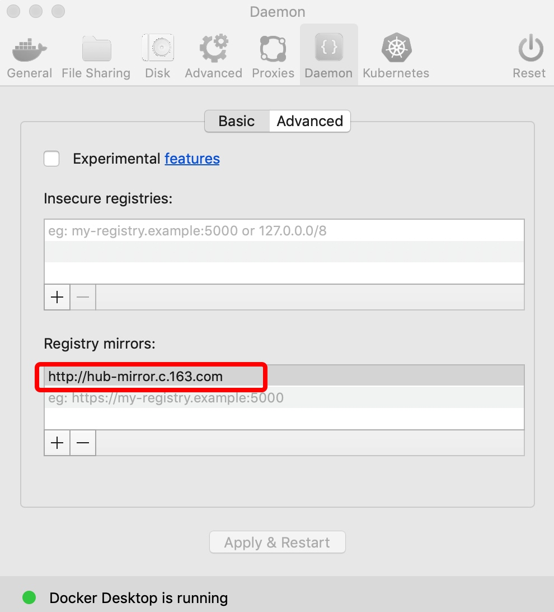

<!doctype html>
<html class="no-js" lang="en">
  <head>
    <meta charset="utf-8" />
    <meta name="viewport" content="width=device-width, initial-scale=1.0" />
    <title>
    
  zhenzhen学习笔记
  
  </title>
  
  
  <link href="atom.xml" rel="alternate" title="zhenzhen学习笔记" type="application/atom+xml">
    <link rel="stylesheet" href="asset/css/foundation.min.css" />
    <link rel="stylesheet" href="asset/css/docs.css" />
    <script src="asset/js/vendor/modernizr.js"></script>
    <script src="asset/js/vendor/jquery.js"></script>
  <script src="asset/highlightjs/highlight.pack.js"></script>
  <link href="asset/highlightjs/styles/github.css" media="screen, projection" rel="stylesheet" type="text/css">
  <script>hljs.initHighlightingOnLoad();</script>
<script type="text/javascript">
  function before_search(){
    var searchVal = 'site: ' + document.getElementById('search_input').value;
    document.getElementById('search_q').value = searchVal;
    return true;
  }
</script>
  </head>
  <body class="antialiased hide-extras">
    
    <div class="marketing off-canvas-wrap" data-offcanvas>
      <div class="inner-wrap">


<nav class="top-bar docs-bar hide-for-small" data-topbar>


  <section class="top-bar-section">
  <div class="row">
      <div style="position: relative;width:100%;"><div style="position: absolute; width:100%;">
        <ul id="main-menu" class="left">
        
        <li id=""><a target="_self" href="index.html">Home</a></li>
        
        <li id=""><a target="_self" href="archives.html">Archives</a></li>
        
        <li id=""><a target="_self" href="about_me.html">aboutme</a></li>
        
        </ul>

        <ul class="right" id="search-wrap">
          <li>
<form target="_blank" onsubmit="return before_search();" action="https://google.com/search" method="get">
    <input type="hidden" id="search_q" name="q" value="" />
    <input tabindex="1" type="search" id="search_input"  placeholder="Search"/>
</form>
</li>
          </ul>
      </div></div>
  </div>
  </section>

</nav>

        <nav class="tab-bar show-for-small">
  <a href="javascript:void(0)" class="left-off-canvas-toggle menu-icon">
    <span> &nbsp; zhenzhen学习笔记</span>
  </a>
</nav>

<aside class="left-off-canvas-menu">
      <ul class="off-canvas-list">
        
        <li><a target="_self" href="index.html">Home</a></li>
        
        <li><a target="_self" href="archives.html">Archives</a></li>
        
        <li><a target="_self" href="about_me.html">aboutme</a></li>
        

    <li><label>Categories</label></li>

        
            <li><a href="1%20Tools.html">1 Tools</a></li>
        
            <li><a href="2%20Get%20Data.html">2 Get Data</a></li>
        
            <li><a href="3%20%E6%95%B0%E6%8D%AE%E5%8F%AF%E8%A7%86%E5%8C%96.html">3 数据可视化</a></li>
        
            <li><a href="4%20%E7%BB%9F%E8%AE%A1%E6%96%B9%E6%B3%95.html">4 统计方法</a></li>
        
            <li><a href="5%20%E6%9C%BA%E5%99%A8%E5%AD%A6%E4%B9%A0.html">5 机器学习</a></li>
        
            <li><a href="6%20%E6%8E%A8%E8%8D%90%E7%B3%BB%E7%BB%9F.html">6 推荐系统</a></li>
        
            <li><a href="6%20%E6%96%87%E6%9C%AC&%E8%A7%86%E9%A2%91.html">6 文本&视频</a></li>
        
            <li><a href="7%20%E6%B7%B1%E5%BA%A6%E5%AD%A6%E4%B9%A0.html">7 深度学习</a></li>
        
            <li><a href="8%20%E6%AF%94%E8%B5%9B%E5%AD%A6%E4%B9%A0.html">8 比赛学习</a></li>
        
            <li><a href="%E6%95%B0%E6%8D%AE%E7%A7%91%E5%AD%A6-%E6%B8%85%E5%8D%95.html">数据科学-清单</a></li>
        
            <li><a href="%E8%BD%A8%E8%BF%B9%E6%95%B0%E6%8D%AE.html">轨迹数据</a></li>
        
            <li><a href="%E8%AF%BB%E4%B9%A6.html">读书</a></li>
         

      </ul>
    </aside>

<a class="exit-off-canvas" href="#"></a>


        <section id="main-content" role="main" class="scroll-container">
        
       

 <script type="text/javascript">
	$(function(){
		$('#menu_item_index').addClass('is_active');
	});
</script>
<div class="row">
	<div class="large-8 medium-8 columns">
		<div class="markdown-body home-categories">
		
			<div class="article">
                <a class="clearlink" href="15637037679256.html">
                
                  <h1>Rmarkdown</h1>
                  <div class="a-content">
                      
                      <div class="a-content-text">
                        
                        	<h2 id="toc_0">python支持</h2>

<p>Rmarkdown对python兼容 <a href="https://github.com/rstudio/reticulate">https://github.com/rstudio/reticulate</a></p>

<h2 id="toc_1">图片</h2>

<p>现在很多makdown编辑器是可以支持拖拽本地图片或者截屏就可以直接在markdown中生成图片的，非常方便，比如我现在在用的MWeb编辑器。</p>

<p>但是如果同一篇内容需要在不同的平台上进行发布，那图片处理起来就比较麻烦。因为需要重新上传到不同平台。<br/>
最方便的处理方式就是利用图床， 这里以七牛云存储为例。<br/>
</p>

<p>step1： 首先在七牛官网上申请注册账号，并且添加<strong>对象存储</strong></p>

                        
                      </div>
                  </div>
                </a>
                <div class="read-more clearfix">
                  <div class="more-left left">
                  
                    <span class="date">2019/7/21</span>
                    <span>posted in&nbsp;</span> 
          				  
          					    <span class="posted-in"><a href='1%20Tools.html'>1 Tools</a></span>
          				   
                    

                  </div>
                  <div class="more-right right">
                  <span class="comments">
                      

                       
                  </span>
                  </div>
                </div>
              </div><!-- article -->
        
			<div class="article">
                <a class="clearlink" href="15637037693934.html">
                
                  <h1>[2018-06-25]学习1</h1>
                  <div class="a-content">
                      
                      <div class="a-content-text">
                        
                        	<p>参考资源list<br/>
2018年06月25日</p>

<p><a href="https://www.tensorflow.org/get_started/get_started_for_beginners">https://www.tensorflow.org/get_started/get_started_for_beginners</a></p>

<p><a href="http://playground.tensorflow.org">http://playground.tensorflow.org</a></p>

<p><a href="https://github.com/aymericdamien/TensorFlow-Examples">https://github.com/aymericdamien/TensorFlow-Examples</a></p>

<p>中文社区<br/>
<a href="http://www.tensorfly.cn/">http://www.tensorfly.cn/</a><br/>
<a href="https://morvanzhou.github.io/tutorials/machine-learning/tensorflow/1-2-install/">https://morvanzhou.github.io/tutorials/machine-learning/tensorflow/1-2-install/</a></p>

<h2 id="toc_0">1.为什么</h2>

                        
                      </div>
                  </div>
                </a>
                <div class="read-more clearfix">
                  <div class="more-left left">
                  
                    <span class="date">2019/7/21</span>
                    <span>posted in&nbsp;</span> 
          				  
          					    <span class="posted-in"><a href='7%20%E6%B7%B1%E5%BA%A6%E5%AD%A6%E4%B9%A0.html'>7 深度学习</a></span>
          				   
                    

                  </div>
                  <div class="more-right right">
                  <span class="comments">
                      

                       
                  </span>
                  </div>
                </div>
              </div><!-- article -->
        
			<div class="article">
                <a class="clearlink" href="15637065259056.html">
                
                  <h1>about me</h1>
                  <div class="a-content">
                      
                      <div class="a-content-text">
                        
                        	<p>about me  </p>

                        
                      </div>
                  </div>
                </a>
                <div class="read-more clearfix">
                  <div class="more-left left">
                  
                    <span class="date">2019/7/21</span>
                    
          				   
                    

                  </div>
                  <div class="more-right right">
                  <span class="comments">
                      

                       
                  </span>
                  </div>
                </div>
              </div><!-- article -->
        
			<div class="article">
                <a class="clearlink" href="15665281146000.html">
                
                  <h1>docker</h1>
                  <div class="a-content">
                      
                      <div class="a-content-text">
                        
                        	<p>docker是一个容器，可以让开发者打包他们的应用以及依赖的环境到一个容器中，然后可以移植到别的机器上。容器是使用的沙箱机制，相互之间不会有任何接口。</p>

<p>docker 官网： <a href="http://www.docker.com">http://www.docker.com</a><br/>
容器:  对象<br/>
镜像images: 类，是用于创建docker容器的模版<br/>
docker仓库<a href="https://hub.docker.com%EF%BC%8C">https://hub.docker.com，</a> 是用来提供各种镜像的仓库。</p>

<p><strong>mac安装</strong><br/>
直接从官网下载安装即可 <a href="https://download.docker.com/mac/stable/Docker.dmg%E3%80%82">https://download.docker.com/mac/stable/Docker.dmg。</a><br/>
由于国内网速问题，安装完docker后，后续拉取镜像可能会十分缓慢，可以配置加速器来解决，如下图所示。</p>

<p>阿里云的加速器：<a href="https://help.aliyun.com/document_detail/60750.html">https://help.aliyun.com/document_detail/60750.html</a><br/>
网易加速器：<a href="http://hub-mirror.c.163.com">http://hub-mirror.c.163.com</a><br/>
官方中国加速器：<a href="https://registry.docker-cn.com">https://registry.docker-cn.com</a><br/>
ustc的镜像：<a href="https://docker.mirrors.ustc.edu.cn">https://docker.mirrors.ustc.edu.cn</a><br/>
daocloud：<a href="https://www.daocloud.io/mirror#accelerator-doc%EF%BC%88%E6%B3%A8%E5%86%8C%E5%90%8E%E4%BD%BF%E7%94%A8%EF%BC%89">https://www.daocloud.io/mirror#accelerator-doc（注册后使用）</a></p>

<p></p>

<p><strong>基本使用</strong></p>

<pre><code class="language-text"># 运行方式 1： 类似于运行pyhton脚本 python xxx.py  参数
docker run ubuntu:18.10 /bin/echo &quot;Hello world&quot;
</code></pre>

<ul>
<li>ubuntu:18.10是指定要运行的镜像，docker会先从本机上检查是否存在，如果不存在会从docker hub下载公共镜像。</li>
<li> /bin/echo &quot;Hello world&quot;， 在启动容器里执行命令</li>
</ul>

<pre><code class="language-text"># 运行方式2： 交互式运行
docker run -i -t ubuntu:18.10 /bin/bash
</code></pre>

<ul>
<li>-t 在新容器中指定一个终端</li>
<li>-i 允许你对容器内的标准输入 (STDIN) 进行交互。</li>
</ul>

<p>后台以进程方式运行docker</p>

<pre><code class="language-text">docker run -d ubuntu:18.10 /bin/sh -c &quot;while true; do echo hello world; sleep 1; done&quot;
</code></pre>

<p>这个时候发现会出现一串字符，这个就是dicker的id。</p>

<ul>
<li>-d 让容器在后台运行</li>
</ul>

<pre><code class="language-text">docker ps   # 查看当前有哪些容器在运行
exit    #退出容器或者`ctrl +D`
docker logs 容器id    #查看容器内的标准输出
docker stop  容器id    # 停止正在运行的docker
</code></pre>

<p><strong>docker 镜像</strong></p>

<pre><code class="language-text">docker pull   REPOSITORY:TAG    # 下载镜像
docker search httpd                      # 查找镜像

# 更新镜像，当自己在镜像内做了一些更新后，可以提交
# commit -m &#39;更新信息&#39; -a 作者 容器id 新版本的镜像名
docker commit -m=&quot;zzz update&quot; -a=&quot;zzz&quot; 容器的id zzz/ubuntu:v2
</code></pre>

<p>从零创建一个镜像<br/>
从零创建镜像的命令是 <code>docker build</code>, 其依赖于一个配置文件Dockerfile，这个文件包含了一组命令来告诉docker如何创建镜像。</p>

<p><code>docker build -t 镜像名 配置文件地址</code></p>

<p>配置文件的一个例子：</p>

<pre><code class="language-text"># 每一个指令的前缀必须是大写
# FROM 表示使用哪个镜像源
# RUN 表示告诉docker在镜像内执行命令
FROM ubuntu:16.04
RUN apt-get update
RUN apt-get install -y unzip cmake g++ make ffmpeg libx264-dev wget
WORKDIR /opt/
</code></pre>

<p><strong>删除</strong></p>

<pre><code class="language-text">docker rm 容器
docker rmi 镜像名
</code></pre>

<h2 id="toc_0">参考资料</h2>

<p><a href="https://www.runoob.com/docker/macos-docker-install.html">https://www.runoob.com/docker/macos-docker-install.html</a><br/>
docker 常用参数 <a href="https://blog.csdn.net/Hello_World_QWP/article/details/84554031">https://blog.csdn.net/Hello_World_QWP/article/details/84554031</a></p>

                        
                      </div>
                  </div>
                </a>
                <div class="read-more clearfix">
                  <div class="more-left left">
                  
                    <span class="date">2019/8/23</span>
                    <span>posted in&nbsp;</span> 
          				  
          					    <span class="posted-in"><a href='1%20Tools.html'>1 Tools</a></span>
          				   
                    

                  </div>
                  <div class="more-right right">
                  <span class="comments">
                      

                       
                  </span>
                  </div>
                </div>
              </div><!-- article -->
        
			<div class="article">
                <a class="clearlink" href="15637037690385.html">
                
                  <h1>face_recgnization</h1>
                  <div class="a-content">
                      
                      <div class="a-content-text">
                        
                        	<p>github<br/>
<a href="https://github.com/ageitgey/face_recognition">https://github.com/ageitgey/face_recognition</a></p>

<h2 id="toc_0">1. 安装</h2>

<p>文档： <a href="https://zhuanlan.zhihu.com/p/28271869">https://zhuanlan.zhihu.com/p/28271869</a></p>

<pre><code class="language-text">pip install face_recognition
</code></pre>

<p>直接安装会报错，安装face_recognition这个之前需要先安装编译dlib</p>

<pre><code class="language-text">brew install boost
brew install boost-python --with-python3

# install dlib
git clone https://github.com/davisking/dlib.git
cd dlib
mkdir build; cd build; cmake .. -DDLIB_USE_CUDA=0 -DUSE_AVX_INSTRUCTIONS=1; cmake --build 

cd ..
python setup.py install --yes USE_AVX_INSTRUCTIONS --no DLIB_USE_CUDA
</code></pre>

<p>If there is no cmake on your mac, you can use  <code>brew install cmake</code>. After all these have been done, run</p>

<pre><code class="language-text">pip install face_recognition
</code></pre>

<h2 id="toc_1">2.usage</h2>

<p>face_recognition有两种使用方式，命令行方式和python包方式</p>

<p>(1) 命令行方式</p>

<p>(2) python 包<br/>
<a href="https://face-recognition.readthedocs.io/en/latest/face_recognition.html#module-face_recognition.api">https://face-recognition.readthedocs.io/en/latest/face_recognition.html#module-face_recognition.api</a></p>

<p></p>

<h2 id="toc_2">参考资料</h2>

<p><a href="https://zhuanlan.zhihu.com/p/28271869">https://zhuanlan.zhihu.com/p/28271869</a></p>

<p><a href="https://medium.com/@ageitgey">https://medium.com/@ageitgey</a></p>

<hr/>

<p><a href="https://www.jianshu.com/p/281aa6a3823a">https://www.jianshu.com/p/281aa6a3823a</a></p>

<p>一个案例<br/>
<a href="https://www.jianshu.com/p/38ca6daf6b40">https://www.jianshu.com/p/38ca6daf6b40</a><br/>
<a href="http://www.opencv.org.cn/opencvdoc/2.3.2/html/doc/tutorials/tutorials.html">http://www.opencv.org.cn/opencvdoc/2.3.2/html/doc/tutorials/tutorials.html</a></p>

<p>tf案例<br/>
<a href="https://blog.csdn.net/u010016927/article/details/75722416">https://blog.csdn.net/u010016927/article/details/75722416</a></p>

<p>knn<br/>
<a href="https://www.leiphone.com/news/201707/gIbNsPtWk460m5vj.html">https://www.leiphone.com/news/201707/gIbNsPtWk460m5vj.html</a></p>

<p><a href="https://blog.csdn.net/Mbx8X9u/article/details/79124840">https://blog.csdn.net/Mbx8X9u/article/details/79124840</a></p>

<p><a href="https://www.ctolib.com/topics-101544.html">https://www.ctolib.com/topics-101544.html</a></p>

<p><a href="https://www.oschina.net/code/snippet_2558914_54339">https://www.oschina.net/code/snippet_2558914_54339</a></p>

<h2 id="toc_3">new</h2>

<p><a href="https://www.leiphone.com/news/201704/rYdpAvh4SvgVPpRQ.html">https://www.leiphone.com/news/201704/rYdpAvh4SvgVPpRQ.html</a></p>

                        
                      </div>
                  </div>
                </a>
                <div class="read-more clearfix">
                  <div class="more-left left">
                  
                    <span class="date">2019/7/21</span>
                    <span>posted in&nbsp;</span> 
          				  
          					    <span class="posted-in"><a href='6%20%E6%96%87%E6%9C%AC&%E8%A7%86%E9%A2%91.html'>6 文本&视频</a></span>
          				   
                    

                  </div>
                  <div class="more-right right">
                  <span class="comments">
                      

                       
                  </span>
                  </div>
                </div>
              </div><!-- article -->
        
              


			<div class="row">
			  <div class="large-6 columns">
			  <p class="text-left" style="padding-top:25px;">
			   <a href="all_5.html">&laquo; Prev Page</a>  
			  </p>
			  </div>
			  <div class="large-6 columns">
			<p class="text-right" style="padding-top:25px;">
			 <a href="all_7.html">&raquo; Next Page</a> 
			</p>
			  </div>
			</div>
		</div>
	</div><!-- large 8 -->

 <div class="large-4 medium-4 columns">
  <div class="hide-for-small">
    <div id="sidebar" class="sidebar">
          <div id="site-info" class="site-info">
            
                <h1>zhenzhen学习笔记</h1>
                <div class="site-des"></div>
                <div class="social">


<a target="_blank" class="github" target="_blank" href="tjzzz.github.io" title="GitHub">GitHub</a>

  <a target="_blank" class="rss" href="atom.xml" title="RSS">RSS</a>
                
              	 </div>
          	</div>

             

              <div id="site-categories" class="side-item ">
                <div class="side-header">
                  <h2>Categories</h2>
                </div>
                <div class="side-content">

      	<p class="cat-list">
        
            <a href="1%20Tools.html"><strong>1 Tools</strong></a>
        
            <a href="2%20Get%20Data.html"><strong>2 Get Data</strong></a>
        
            <a href="3%20%E6%95%B0%E6%8D%AE%E5%8F%AF%E8%A7%86%E5%8C%96.html"><strong>3 数据可视化</strong></a>
        
            <a href="4%20%E7%BB%9F%E8%AE%A1%E6%96%B9%E6%B3%95.html"><strong>4 统计方法</strong></a>
        
            <a href="5%20%E6%9C%BA%E5%99%A8%E5%AD%A6%E4%B9%A0.html"><strong>5 机器学习</strong></a>
        
            <a href="6%20%E6%8E%A8%E8%8D%90%E7%B3%BB%E7%BB%9F.html"><strong>6 推荐系统</strong></a>
        
            <a href="6%20%E6%96%87%E6%9C%AC&%E8%A7%86%E9%A2%91.html"><strong>6 文本&视频</strong></a>
        
            <a href="7%20%E6%B7%B1%E5%BA%A6%E5%AD%A6%E4%B9%A0.html"><strong>7 深度学习</strong></a>
        
            <a href="8%20%E6%AF%94%E8%B5%9B%E5%AD%A6%E4%B9%A0.html"><strong>8 比赛学习</strong></a>
        
            <a href="%E6%95%B0%E6%8D%AE%E7%A7%91%E5%AD%A6-%E6%B8%85%E5%8D%95.html"><strong>数据科学-清单</strong></a>
        
            <a href="%E8%BD%A8%E8%BF%B9%E6%95%B0%E6%8D%AE.html"><strong>轨迹数据</strong></a>
        
            <a href="%E8%AF%BB%E4%B9%A6.html"><strong>读书</strong></a>
         
        </p>


                </div>
              </div>

              <div id="site-categories" class="side-item">
                <div class="side-header">
                  <h2>Recent Posts</h2>
                </div>
                <div class="side-content">
                <ul class="posts-list">
	      
		      
			      <li class="post">
			        <a href="15706729896574.html"></a>
			      </li>
		     
		  
		      
			      <li class="post">
			        <a href="15687050894061.html">0.综述</a>
			      </li>
		     
		  
		      
			      <li class="post">
			        <a href="15637036455584.html">1 估计的置信度</a>
			      </li>
		     
		  
		      
			      <li class="post">
			        <a href="15637025346412.html">1. conda 环境管理</a>
			      </li>
		     
		  
		      
			      <li class="post">
			        <a href="15694859531608.html">1.trajectory preprocessing</a>
			      </li>
		     
		  
		      
		  
		      
		  
		      
		  
		      
		  
		      
		  
		      
		  
		      
		  
		      
		  
		      
		  
		      
		  
		      
		  
		      
		  
		      
		  
		      
		  
		      
		   
		  		</ul>
                </div>
              </div>
        </div><!-- sidebar -->
      </div><!-- hide for small -->
</div><!-- large 4 -->

</div><!-- row -->

 <div class="page-bottom clearfix">
  <div class="row">
   <p class="copyright">Copyright &copy; 2015
Powered by <a target="_blank" href="http://www.mweb.im">MWeb</a>,&nbsp; 
Theme used <a target="_blank" href="http://github.com">GitHub CSS</a>.</p>
  </div>
</div>

        </section>
      </div>
    </div>

  
    

    <script src="asset/js/foundation.min.js"></script>
    <script>
      $(document).foundation();
      function fixSidebarHeight(){
        var w1 = $('.markdown-body').height();
          var w2 = $('#sidebar').height();
          if (w1 > w2) { $('#sidebar').height(w1); };
      }
      $(function(){
        fixSidebarHeight();
      })
      $(window).load(function(){
          fixSidebarHeight();
      });
     
    </script>

    
<script type="text/javascript" src="https://cdnjs.cloudflare.com/ajax/libs/mathjax/2.7.1/MathJax.js?config=TeX-AMS-MML_HTMLorMML"></script><script type="text/x-mathjax-config">MathJax.Hub.Config({TeX: { equationNumbers: { autoNumber: "AMS" } }});</script>


  </body>
</html>
